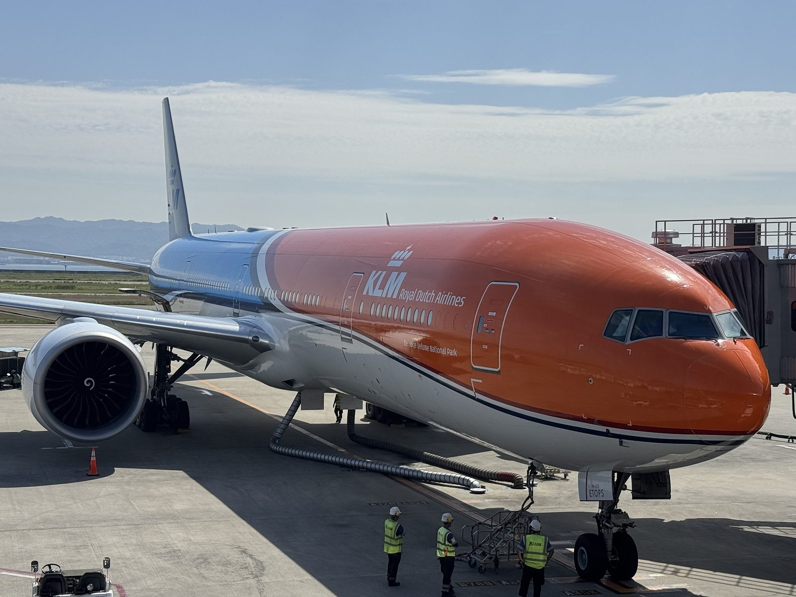
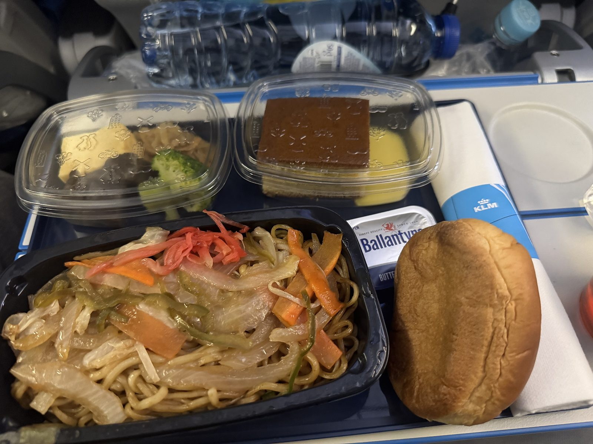
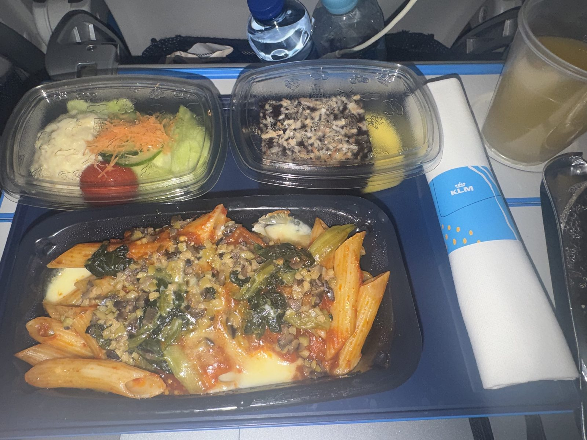
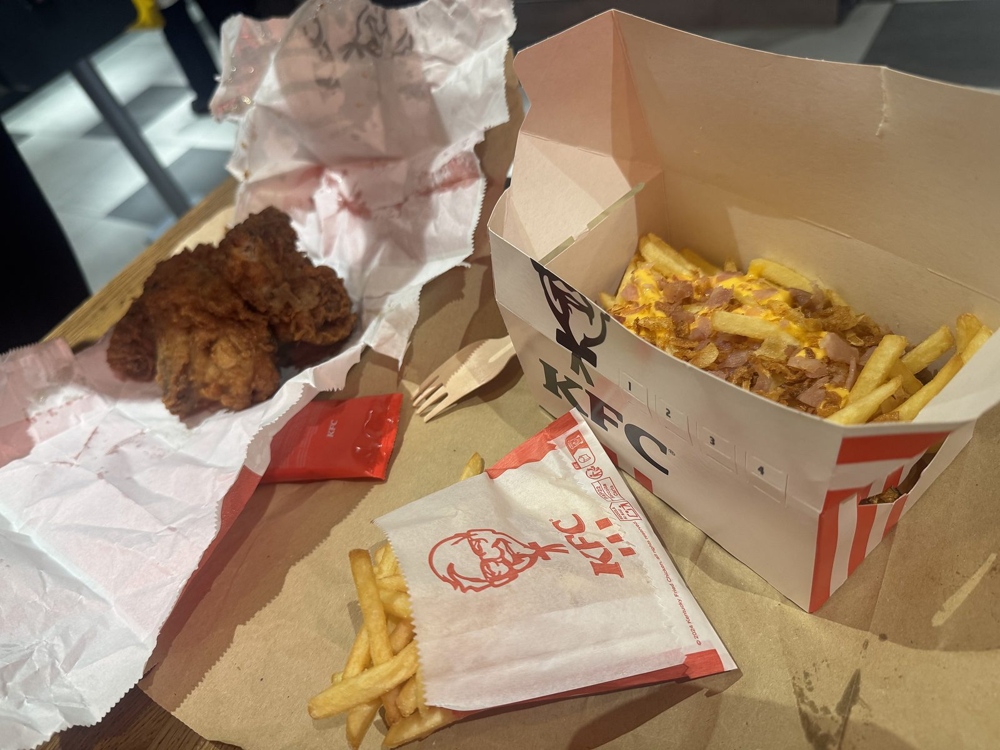
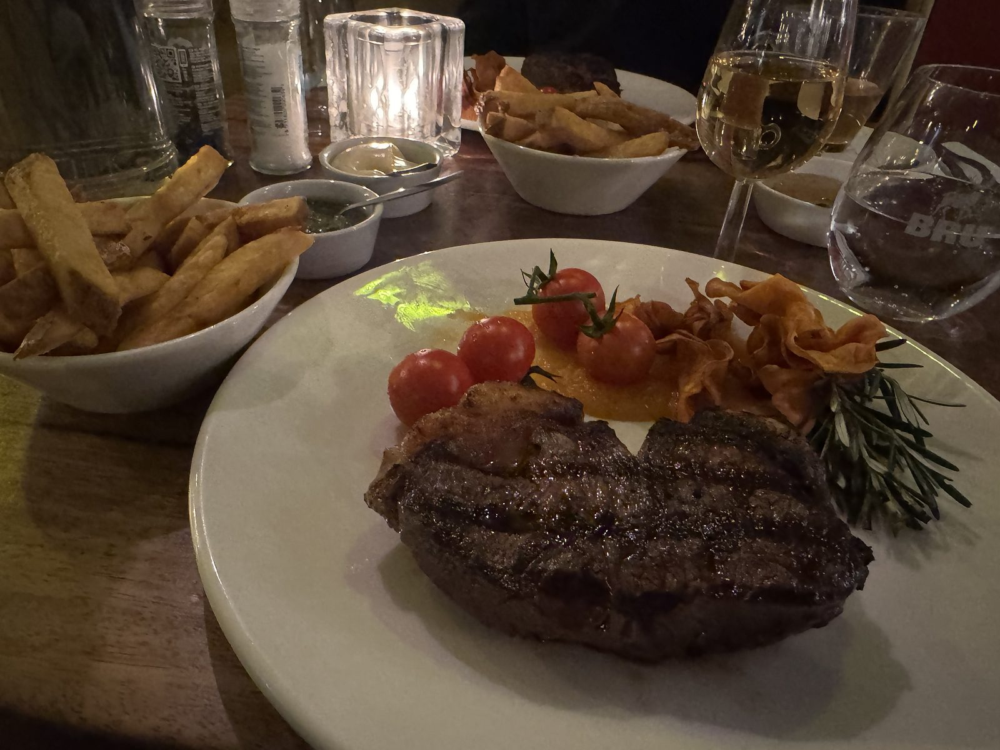

オレンジの翼で
第0回のとんかつをあとに、関空を発ったのはKLMです。
10月16日。オレンジの機体が、朝の光のなかで大きく光っていました。

空の上では、二度食事が運ばれてきます。
最初は、紅しょうがをあしらった麺と、やわらかいパン。

続いてペンネ。
トマトのソースにチーズが溶け、緑の葉がのっています。雲の上でいただく、あたたかい一皿でした。

着陸して、最初の一食
降りてすぐのKFCで、旅の初日が始まります。
衣の立ったチキンと、チーズとベーコンをまとったポテト。

紙のフォークを手に、カリッとした衣から旅が始まります。
遠い国に着いた実感が、この一口で届きました。
ユトレヒトの夜、Meat & More
夜はユトレヒト。
Mariastraat の Meat & More で、ステーキをいただきました。
表面にはきれいなグリルの跡。
ミニトマトと香ばしい付け合わせが並び、フリットは白い器に山盛りです。ソースが二つ、小さな皿で添えられています。

グラスには白ワイン。
肉の香りと、低い照明。着いた日の夜に、これ以上ない食卓でした。
===店舗情報===
店名: Meat & More
リンク: 公式サイト
住所: Mariastraat 8, 3511 LP Utrecht
次はブリュッセル
オランダの食卓は、空の上の麺と、ユトレヒトのステーキで一度閉じます。
10月18日、向かう先はブリュッセルです。
#2 ベルギー編に続く。